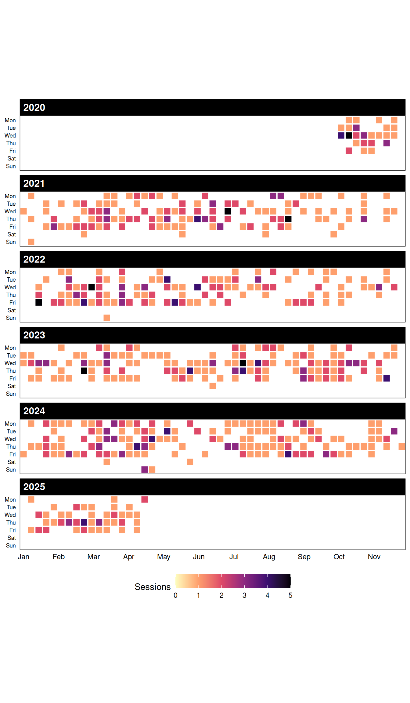

Data Science guidance session logs
Overview
This website contains the public logs for the Data Science guidance sessions (DSgs).
Graphs
Below we see the number of DSgs sessions for each of the guides across time. You can mouse-over each point to see the data, or click on each guide’s name to hide/show their information. The data is filtered to show only active DSgs guides.
As a team, this is the overall number of help requests we have completed over time grouped by day and year.

These graphs are partially based on lcolladotor/mphtasessions and GitHub-style waffle plots in R.
0.1 Full logs
Here you an explore the full logs. The name of the person asking the question(s) is not displayed for privacy.
The idea is that this information could be useful for people who have similar questions, as well as for DSgs guides who want to re-use material from previous answers when helping someone.
gt::tab_options(
gt::fmt_markdown(gt::gt(logs_data[, c("date", "guide_name", "help_request", "public_notes")]), columns = c("help_request", "public_notes")),
ihtml.active = TRUE,
ihtml.use_search = TRUE,
ihtml.use_filters = TRUE,
ihtml.use_resizers = TRUE
)R session information
Details on the R version used for making this book. The source code is available at lcolladotor/DSgs_logs.
## Packages used in the book
library("ggplot2")
library("lubridate")
library("dplyr")
library("plotly")
library("here")
## Load the package at the top of your script
library("sessioninfo")
## Reproducibility information
print('Reproducibility information:')## [1] "Reproducibility information:"## [1] "2024-03-26 16:28:50 UTC"## user system elapsed
## 12.284 0.674 12.451## ─ Session info ───────────────────────────────────────────────────────────────────────────────────────────────────────
## setting value
## version R Under development (unstable) (2024-03-24 r86185)
## os Ubuntu 22.04.4 LTS
## system x86_64, linux-gnu
## ui X11
## language (EN)
## collate en_US.UTF-8
## ctype en_US.UTF-8
## tz UTC
## date 2024-03-26
## pandoc 3.1.1 @ /usr/local/bin/ (via rmarkdown)
##
## ─ Packages ───────────────────────────────────────────────────────────────────────────────────────────────────────────
## package * version date (UTC) lib source
## bookdown 0.38 2024-03-04 [1] CRAN (R 4.4.0)
## bslib 0.6.2 2024-03-22 [2] CRAN (R 4.4.0)
## cachem 1.0.8 2023-05-01 [2] CRAN (R 4.4.0)
## cli 3.6.2 2023-12-11 [2] CRAN (R 4.4.0)
## colorspace 2.1-0 2023-01-23 [1] CRAN (R 4.4.0)
## commonmark 1.9.1 2024-01-30 [2] CRAN (R 4.4.0)
## crosstalk 1.2.1 2023-11-23 [1] CRAN (R 4.4.0)
## data.table 1.15.2 2024-02-29 [1] CRAN (R 4.4.0)
## digest 0.6.35 2024-03-11 [2] CRAN (R 4.4.0)
## dplyr * 1.1.4 2023-11-17 [1] CRAN (R 4.4.0)
## ellipsis 0.3.2 2021-04-29 [2] CRAN (R 4.4.0)
## evaluate 0.23 2023-11-01 [2] CRAN (R 4.4.0)
## fansi 1.0.6 2023-12-08 [2] CRAN (R 4.4.0)
## farver 2.1.1 2022-07-06 [1] CRAN (R 4.4.0)
## fastmap 1.1.1 2023-02-24 [2] CRAN (R 4.4.0)
## generics 0.1.3 2022-07-05 [1] CRAN (R 4.4.0)
## ggplot2 * 3.5.0 2024-02-23 [1] CRAN (R 4.4.0)
## glue 1.7.0 2024-01-09 [2] CRAN (R 4.4.0)
## gt * 0.10.1 2024-01-17 [1] CRAN (R 4.4.0)
## gtable 0.3.4 2023-08-21 [1] CRAN (R 4.4.0)
## here * 1.0.1 2020-12-13 [1] CRAN (R 4.4.0)
## highr 0.10 2022-12-22 [2] CRAN (R 4.4.0)
## htmltools 0.5.7 2023-11-03 [2] CRAN (R 4.4.0)
## htmlwidgets 1.6.4 2023-12-06 [2] CRAN (R 4.4.0)
## httr 1.4.7 2023-08-15 [2] CRAN (R 4.4.0)
## jquerylib 0.1.4 2021-04-26 [2] CRAN (R 4.4.0)
## jsonlite 1.8.8 2023-12-04 [2] CRAN (R 4.4.0)
## knitr 1.45 2023-10-30 [2] CRAN (R 4.4.0)
## labeling 0.4.3 2023-08-29 [1] CRAN (R 4.4.0)
## lazyeval 0.2.2 2019-03-15 [1] CRAN (R 4.4.0)
## lifecycle 1.0.4 2023-11-07 [2] CRAN (R 4.4.0)
## lubridate * 1.9.3 2023-09-27 [1] CRAN (R 4.4.0)
## magrittr 2.0.3 2022-03-30 [2] CRAN (R 4.4.0)
## markdown 1.12 2023-12-06 [1] CRAN (R 4.4.0)
## munsell 0.5.0 2018-06-12 [1] CRAN (R 4.4.0)
## pillar 1.9.0 2023-03-22 [2] CRAN (R 4.4.0)
## pkgconfig 2.0.3 2019-09-22 [2] CRAN (R 4.4.0)
## plotly * 4.10.4 2024-01-13 [1] CRAN (R 4.4.0)
## purrr 1.0.2 2023-08-10 [2] CRAN (R 4.4.0)
## R6 2.5.1 2021-08-19 [2] CRAN (R 4.4.0)
## RColorBrewer 1.1-3 2022-04-03 [1] CRAN (R 4.4.0)
## reactable 0.4.4 2023-03-12 [1] CRAN (R 4.4.0)
## reactR 0.5.0 2023-10-11 [1] CRAN (R 4.4.0)
## rlang 1.1.3 2024-01-10 [2] CRAN (R 4.4.0)
## rmarkdown 2.26 2024-03-05 [2] CRAN (R 4.4.0)
## rprojroot 2.0.4 2023-11-05 [2] CRAN (R 4.4.0)
## rstudioapi 0.16.0 2024-03-24 [2] CRAN (R 4.4.0)
## sass 0.4.9 2024-03-15 [2] CRAN (R 4.4.0)
## scales 1.3.0 2023-11-28 [1] CRAN (R 4.4.0)
## sessioninfo * 1.2.2 2021-12-06 [2] CRAN (R 4.4.0)
## tibble 3.2.1 2023-03-20 [2] CRAN (R 4.4.0)
## tidyr 1.3.1 2024-01-24 [1] CRAN (R 4.4.0)
## tidyselect 1.2.1 2024-03-11 [1] CRAN (R 4.4.0)
## timechange 0.3.0 2024-01-18 [1] CRAN (R 4.4.0)
## utf8 1.2.4 2023-10-22 [2] CRAN (R 4.4.0)
## vctrs 0.6.5 2023-12-01 [2] CRAN (R 4.4.0)
## viridisLite 0.4.2 2023-05-02 [1] CRAN (R 4.4.0)
## withr 3.0.0 2024-01-16 [2] CRAN (R 4.4.0)
## xfun 0.43 2024-03-25 [2] CRAN (R 4.4.0)
## xml2 1.3.6 2023-12-04 [2] CRAN (R 4.4.0)
## yaml 2.3.8 2023-12-11 [2] CRAN (R 4.4.0)
##
## [1] /usr/local/lib/R/host-site-library
## [2] /usr/local/lib/R/site-library
## [3] /usr/local/lib/R/library
##
## ──────────────────────────────────────────────────────────────────────────────────────────────────────────────────────This book was last updated on 2024-03-26 16:28:50.717072.